СТАТЬИ


ДАННЫЕ СТАТЬИ СОЗДАНЫ ДЛЯ ТОГО, ЧТО БЫ ВЫ НИКОГДА НЕ ЗАБЫВАЛИ,
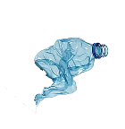
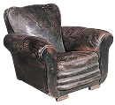

Внимание к деталям. Как оно помогает в жизни?
перейти
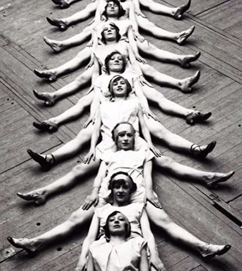
Повседневное вдохновение. Где искать?
перейти

Образы.
Как создавать образы
из простого?
перейти
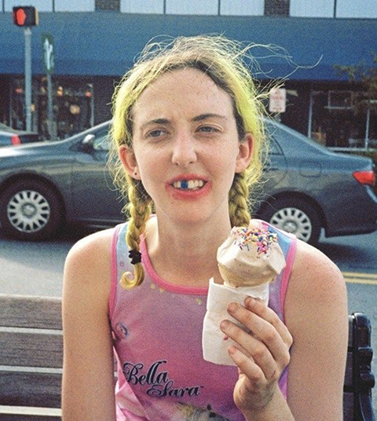
Маленькие радости.
Почему важно искать позитив?
перейти
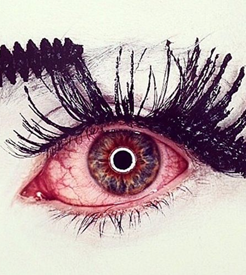
Насмотренность и вкус.
Как развить?
перейти
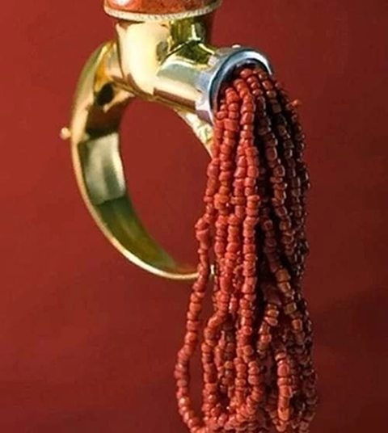
Навыки.
Как использовать знания?
перейти
Ошибки.
Как они становятся композоцией?
перейти

Голос города.
Случайная типографика.
перейти

Изобилие идей.
Как не запутаться в мыслях?
перейти

Случайность.
Красота там, где её не планировали.
перейти
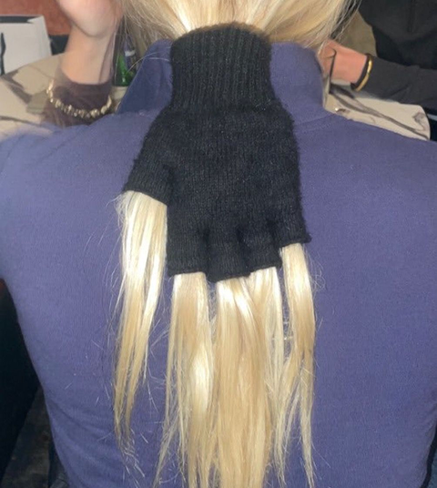
Обычные вещи.
Как найти новые смыслы?
перейти
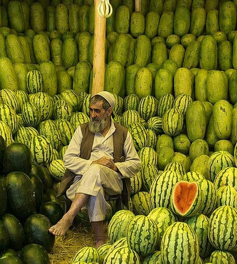
Паттерн.
Повторение как визуальный язык.
перейти

Знания.
Как показать свои навыки?
перейти

Простота
Наивный дизайн, который работает.
перейти

Структуризация.
Нужно ли делать проект понятнее?
перейти
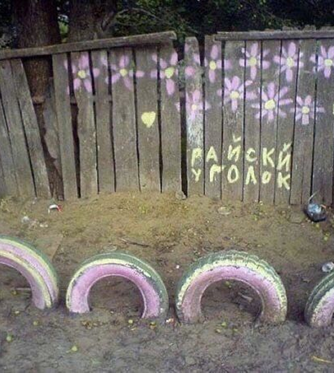
Приукрашивание.
Можно ли разукрасить этот мир?
перейти

Эстетика.
Как определить, что тебя вдохновляет?
перейти
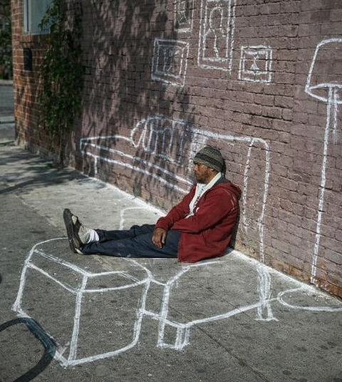
Восприятие.
Где границы того, что мы видим?
перейти
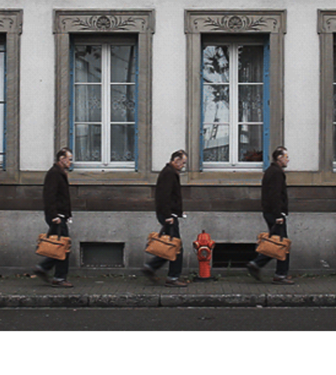
Темп.
Как скорость влияет на идею?
перейти
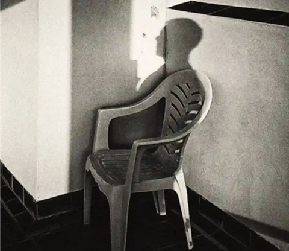
Молчание.
Можно ли сделать паузу содержанием?
перейти

Контроль.
Управлять ли процессом до конца?
перейти

Это моё.
Почему что-то цепляет, а что-то нет.
перейти
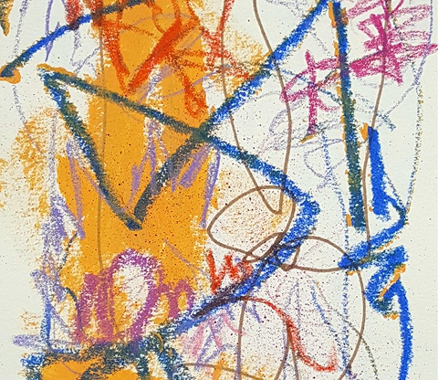
Неровность.
Откуда берётся ощущение живого?.
перейти
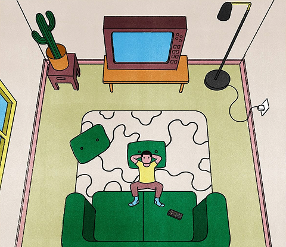
Скука.
Может ли она быть полезной?
перейти

Ожидание.
Почему мы боимся начать?
перейти

Сравнение.
Почему чужое кажется лучше?
перейти

Интерес.
Откуда он вообще берётся?
перейти
ЧТО УРОНИВ БОЛЬШУЮ ИДЕЮ НА ПОЛ, ВЫ МОЖЕТЕ НАЙТИ ТАМ
МАЛЕНЬКУЮ, КОТОРАЯ ПОДОЙДЁТ ЛУЧШЕ!